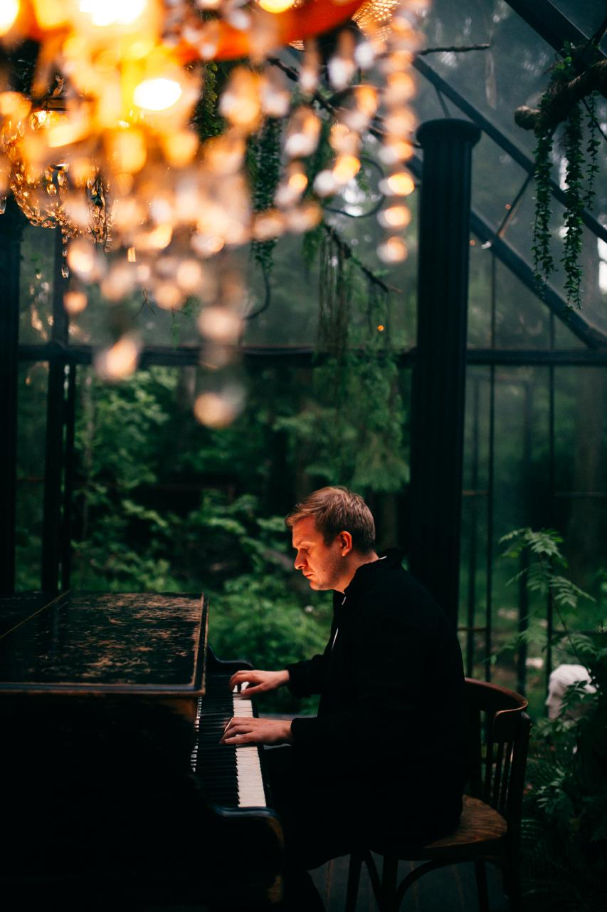
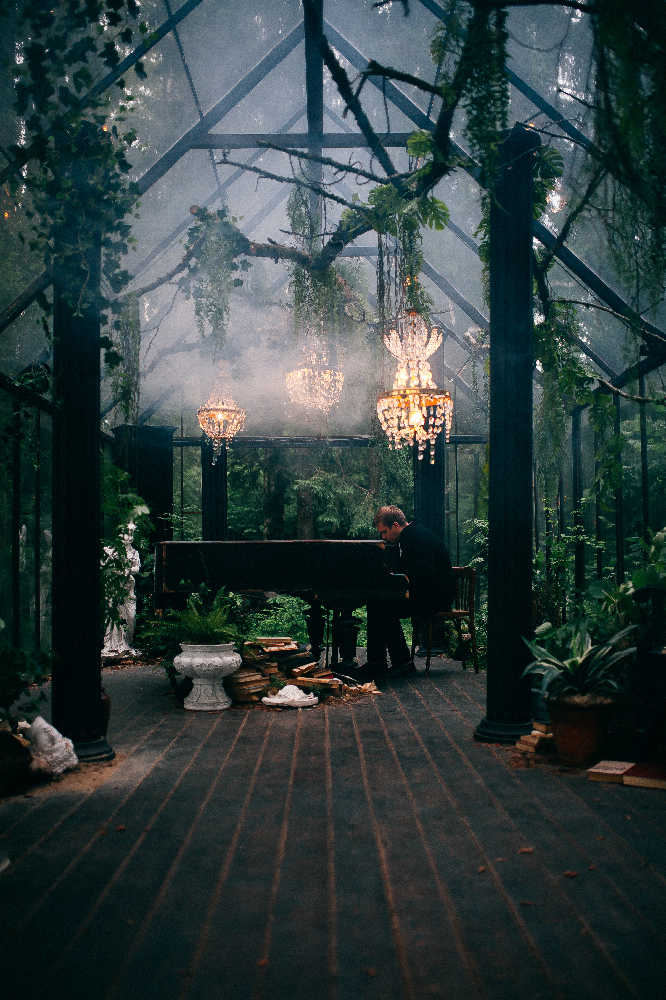
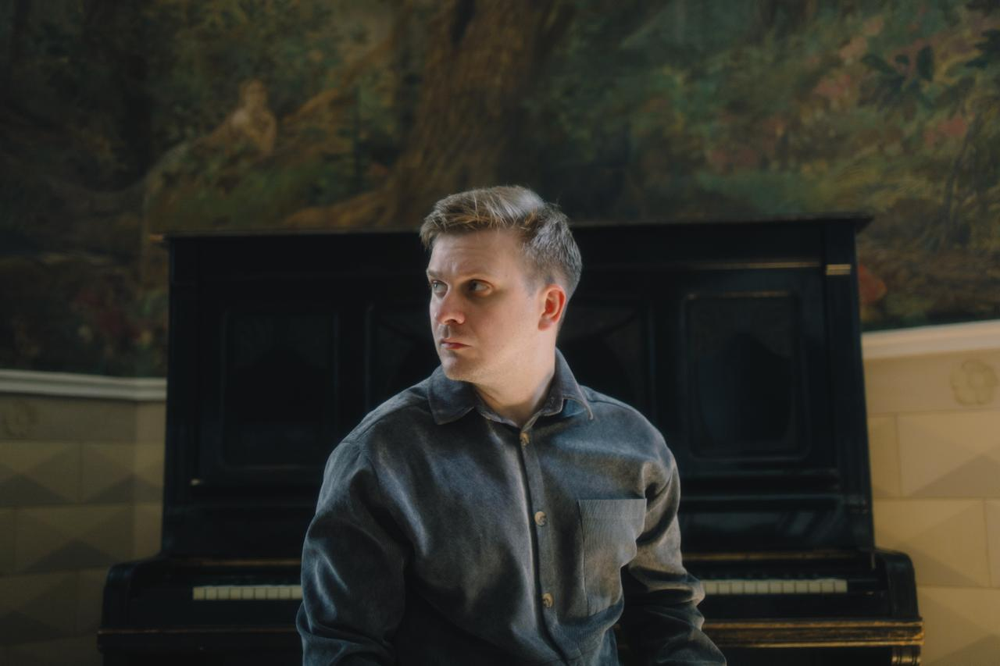
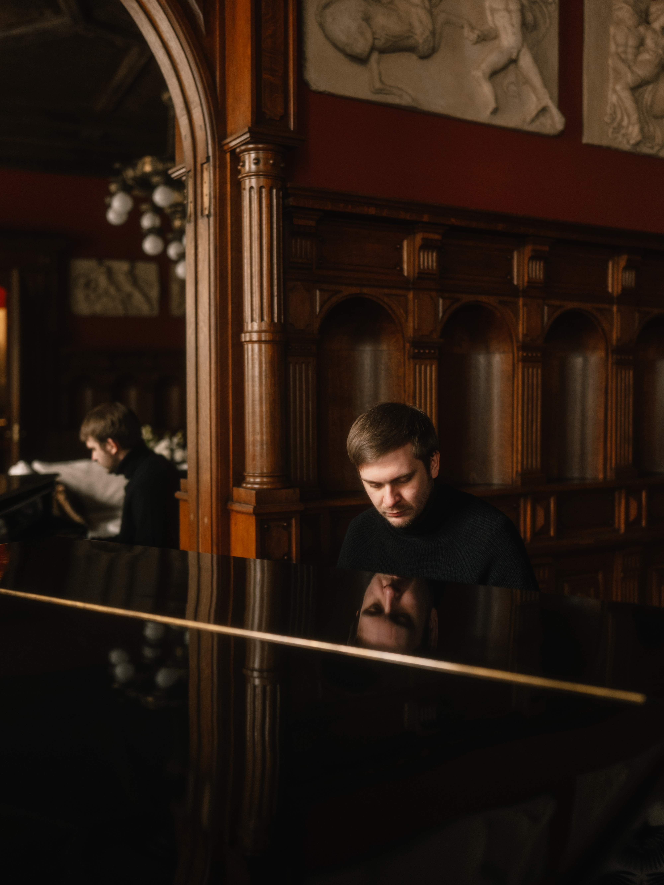
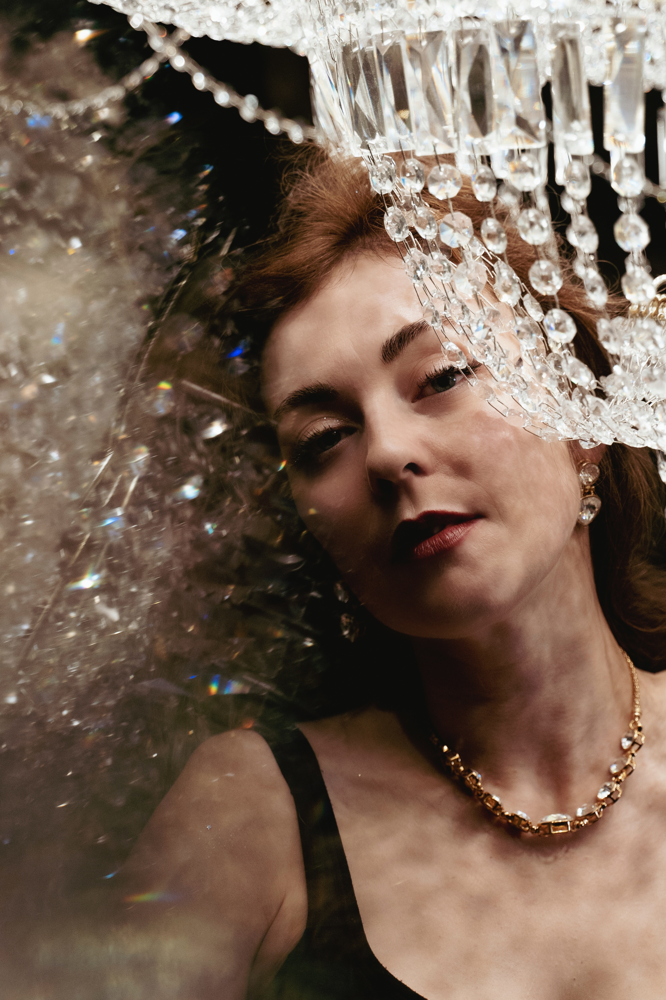
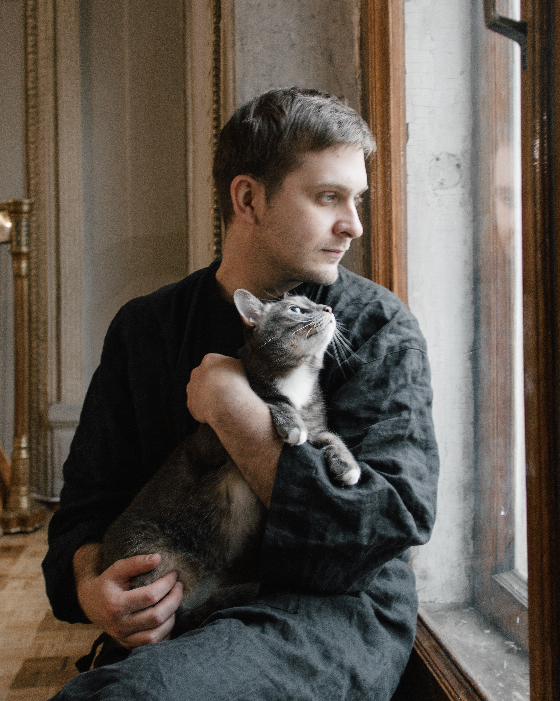

Большой концерт
«Избранное со струнными» — струнный квинтет, зал, сцена и программа тринадцати лет творчества.
Музыка, которая начинается с разговора

Камерная встреча с композитором и пианистом: живая музыка, разговор о творческом пути артиста и возможность услышать человека по другую сторону сцены.
Купить билетПо всем вопросам — n.tsiaseika@yandex.ru
Обычно мы встречаемся с композитором тогда, когда всё уже произошло: произведение написано, программа собрана, свет в зале погас — и между артистом и слушателем появилась сцена.
На этой встрече мы попробуем немного сократить дистанцию. Илья исполнит несколько произведений и поговорит с нами о том, как вообще рождается музыка: откуда приходит мелодия, как понять, что композиция закончена, что происходит с автором после тринадцати лет на сцене и можно ли сохранить радость творчества, когда музыка становится профессией.
Это будет живой разговор — без академической тяжеловесности и дежурных вопросов из биографии. Хотя биография у Ильи такая, что пройти мимо неё всё равно не получится: музыкальная семья, инженерное образование, первые композиции, опубликованные в интернете, восемь альбомов и собственный музыкальный язык, который слушатели узнают с первых нот.
И всё это — в камерном пространстве, где музыку можно услышать совсем близко.



Композитор и пианист — один из самых узнаваемых современных российских авторов, работающих на пересечении минимализма, неоромантизма и музыки, которую сегодня принято называть неоклассикой.
Илья родился в Красноярске в семье композитора Валерия Бешевли. Учился в музыкальной школе, затем получил профессию инженера-механика — и только после этого музыка окончательно стала главным делом его жизни.
Первые произведения Илья начал публиковать в интернете в 2012 году. Сегодня в его дискографии восемь альбомов, а концерты проходят в крупнейших залах России.
«В центре моей музыки всегда находится мелодия. Всё остальное выстраивается вокруг неё».
16 ноября мы услышим эту музыку в её самом камерном звучании — и поговорим о том, что обычно остаётся за нотами.
Накануне, 15 ноября, Илья Бешевли представит в Новосибирске программу «Избранное со струнными» — произведения, созданные за 13 лет творческого пути, в сопровождении струнного квинтета.
А на следующий день после концерта мы встретимся за одним фортепиано и разговором по душам: как сам Илья воспринимает пройденный путь, какие отношения связывают его с ранними произведениями и что меняется в знакомой музыке, когда к фортепиано присоединяются струнные.
«Избранное со струнными» — струнный квинтет, зал, сцена и программа тринадцати лет творчества.
Одно фортепиано, полтора часа, до пятидесяти гостей — и разговор, которого не бывает в большом зале.
Два вечера.
Два совершенно разных способа
услышать одного композитора.
Знакомимся, фотографируемся, осматриваем пространство и постепенно перестаём куда-либо спешить. Хотя бы на ближайшие два часа.
Первое произведение и разговор о пути от инженерного факультета к профессии композитора: музыкальная семья, первые сочинения и момент, когда музыка перестала быть увлечением.
Как рождается мелодия? Можно ли вызвать вдохновение усилием воли? Как понять, что произведение закончено? Что в музыке принадлежит интуиции, а что — ремеслу? Между частями разговора Илья исполнит несколько своих произведений.
Жанровые ярлыки, доступность современной музыки, собственные образы слушателя — и то, что происходит с произведением после того, как автор его отпускает.
Возможность задать Илье свой вопрос — настоящий, а не тот, который обычно задают артисту из третьего ряда большого зала.
Завершим вечер музыкой, потому что некоторые ответы действительно лучше не переводить в слова.
Окончание встречи — около 21:00. Программа может немного меняться: это живой разговор, и мы сознательно оставляем в нём место для неожиданностей.

Нина много лет работает в ивент- и культурной повестке, пишет о балете и современном искусстве, создаёт камерные встречи с артистами и умеет задавать вопросы, которые уводят разговор чуть дальше привычной биографии.
Вы слушаете музыку Ильи Бешевли и хотите впервые увидеть человека, который стоит за знакомыми произведениями.
Вам интересна современная академическая музыка, но иногда хочется обойтись без необходимости срочно получить музыковедческое образование.
Вы сами занимаетесь творчеством и знаете: за красивым результатом почти всегда скрываются сомнения, работа, переделки и ещё немного сомнений.
Вы ищете в Новосибирске культурные события, после которых остаётся не только фотография в телефоне, но и некоторое внутреннее послевкусие.
Или вам просто хочется провести ноябрьский вечер рядом с фортепиано, музыкой и людьми, с которыми не нужно объяснять, зачем всё это нужно.
Этого уже достаточно.
Каждая точка — одно место. Найдите своё.
Небольшое количество мест здесь — не маркетинговый приём. Нам важно сохранить пространство, в котором можно услышать негромкий голос, увидеть реакцию артиста, задать вопрос и не почувствовать себя маленьким человеком из огромного тёмного зала.
Продолжительность встречи — около полутора часов. Оставшееся время предназначено для сбора гостей, фотографий и короткого личного общения после основной программы.
В стоимость входит участие во всей программе вечера и приветственный напиток — если он будет предусмотрен площадкой.
Купить билетПосле оплаты билет и подробная информация о площадке придут на указанную электронную почту. Если письмо не появилось в течение нескольких минут — проверьте папку «Спам»: иногда даже культурные события оказываются там совершенно незаслуженно.
Публичная оферта · Тесейко Нина Александровна · ИНН 772998913406 · n.tsiaseika@yandex.ru
Voci dell’Opera — независимый интернет-журнал об опере, балете, музыке и людях искусства.
Мы пишем об искусстве так, как хочется: внимательно, честно, без обязательного придыхания перед каждым великим именем. Разговариваем с артистами, наблюдаем за тем, как меняется культурная среда, и создаём события, на которых публика и искусство могут встретиться чуть ближе.
Voci работает между Россией и Европой — и теперь пришёл в Новосибирск. Встреча с Ильёй Бешевли станет первым камерным событием журнала в городе. И нам очень интересно, что из этого вырастет.
* Деятельность Meta, которой принадлежат Instagram и Threads, запрещена на территории РФ.
voci — итал. «голоса»
ATELIER — это искусство жить искусством.
Да. В программе предусмотрена отдельная часть для вопросов гостей. Если разговор будет развиваться особенно живо, вопросы из зала могут появляться и раньше.
Да. Разговор будет чередоваться с живым исполнением нескольких произведений. Это не будет полноценным концертом артиста — но фортепиано в этот вечер будет звучать.
Не совсем. Музыка — полноценная часть вечера, но основой встречи станет разговор с Ильёй. Большой концерт со струнным квинтетом состоится днём ранее — 15 ноября.
Сбор гостей начинается в 19:00, основная программа — в 19:30. Завершить вечер планируем около 21:00.
Да, если съёмка не мешает артисту и другим гостям. Пожалуйста, отключите вспышку и звук телефона.
Да, на мероприятии будет работать фотограф. Покупая билет, гость соглашается с возможным присутствием на общих фотографиях и видеоматериалах события.
Строгого дресс-кода нет. Выбирайте то, в чём вам будет комфортно провести камерный вечер. Но если давно хотелось красиво одеться без необходимости объяснять окружающим причину — вот она.
Условия возврата и переоформления согласуются с организатором — напишите на n.tsiaseika@yandex.ru, и мы всё подскажем.
Да, оплаченный билет можно передать друзьям и близким, если он не был использован. Для переоформления обратитесь в службу поддержки и укажите данные нового владельца. Возможность переоформления и связанные с ним условия зависят от правил мероприятия.
Да, встреча проходит с возрастным ограничением 12+.
Да. Также на площадке есть кнопка вызова персонала для помощи.

16 ноября мы впервые соберём камерную встречу Voci dell’Opera в Новосибирске. Будет живое фортепиано. Будет душевный разговор с композитором. Будут вопросы, на которые не всегда сразу найдётся точный ответ. И будет музыка Ильи Бешевли всего лишь на расстоянии нескольких шагов — без большой сцены и ярких софитов.
Количество мест ограничено форматом вечера.
— До встречи с мечтой!